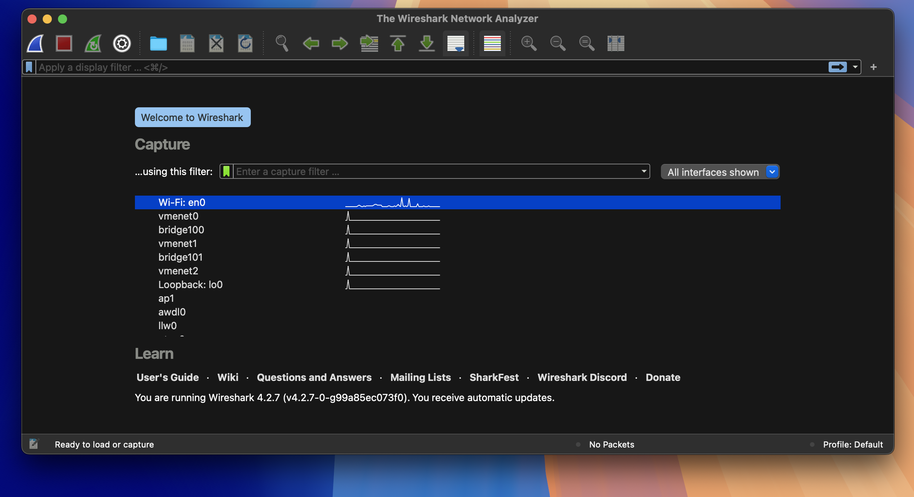
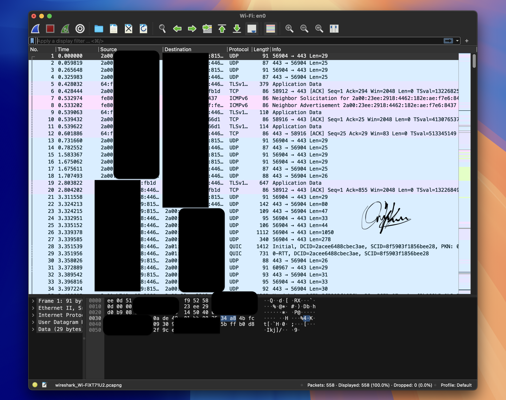
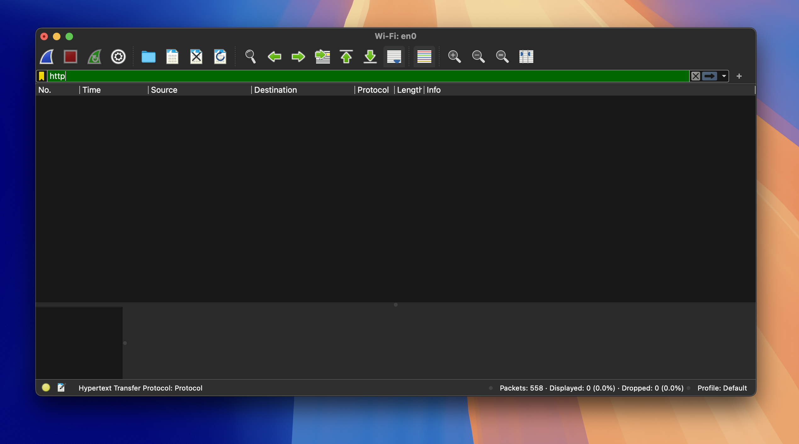
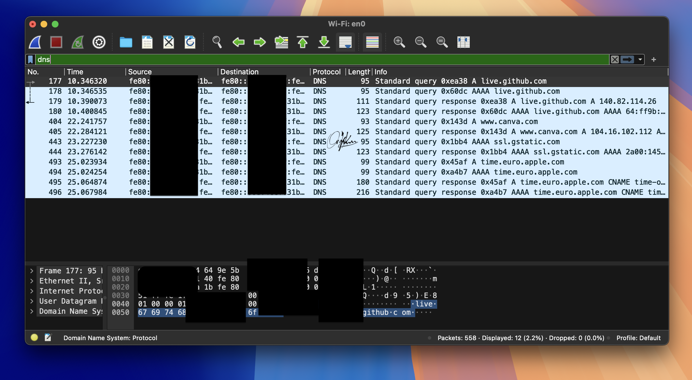

Image 1: Wireshark Interface (Wi-Fi: en0 Selected): This image shows Wireshark’s main interface, with the capture settings displayed. In this case, Wi-Fi (interface en0) is selected for packet capturing. The list of available network interfaces appears in the “Capture” section, showing which networks Wireshark can listen to for network traffic.

Image 2: Captured Network Packets: This image represents the result after starting the capture on Wi-Fi: en0. The displayed list contains a variety of network packets, including TCP, UDP, and ICMPv6 traffic. For each packet, you see details such as source, destination, protocol, and length of the data. These packets are part of the wireless network traffic being captured in real time. (Some parts are censored for privacy purposes)

Image 3: Filtered HTTP Packets: This image shows that a filter is applied for HTTP traffic. The filter is entered in the display filter bar to narrow down the captured packets to only show HTTP traffic, making it easier to focus on a specific protocol or type of traffic. You can see that no instances of unencrypted HTTP traffic were observed.

Image 4: Filtered DNS Packets: The image shows DNS packets captured and displayed. A filter for DNS traffic has been applied in the filter bar. DNS traffic often includes domain name lookups, and here you can see responses from DNS servers like GitHub and other domains. This helps analyze how domain names are being resolved within the network. (Some parts are censored for privacy purposes)